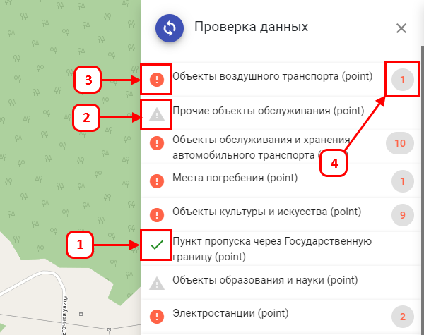

-
Прошедшие проверку заполнения объектов данными согласно Приказу, будут выделены зеленой «галочкой».
-
Не проверенные – серым «восклицательным знаком».
-
Все содержащие ошибки – красными «восклицательным знаком».
-
Количество объектов, содержащих ошибки - «красным цветом».
